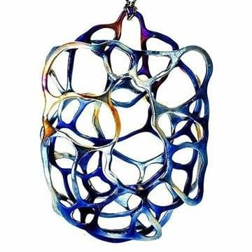
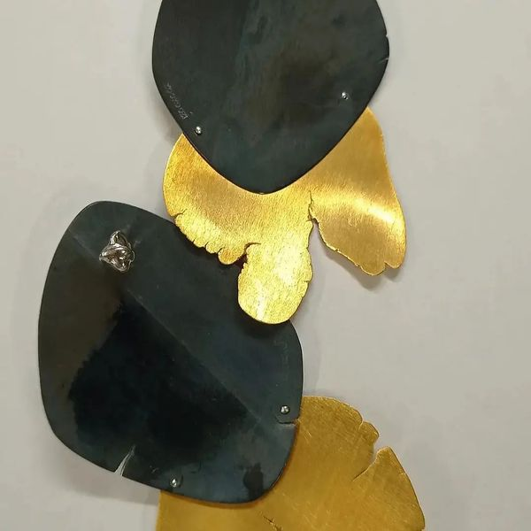 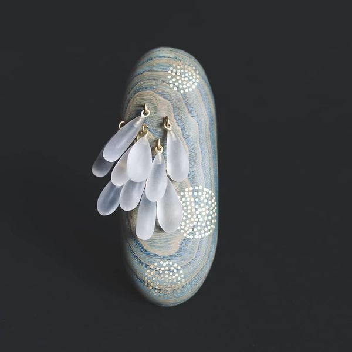 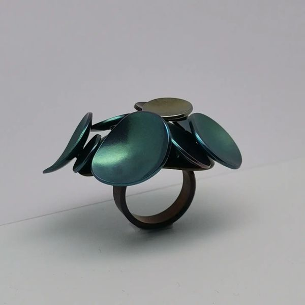 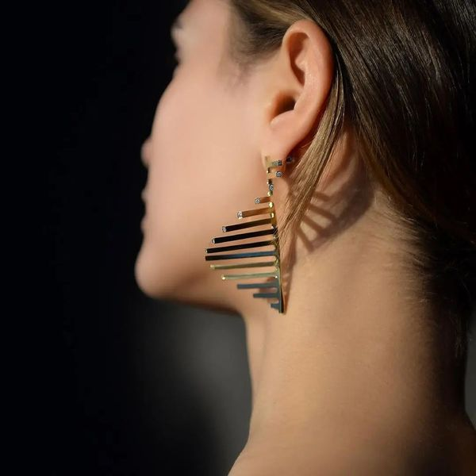 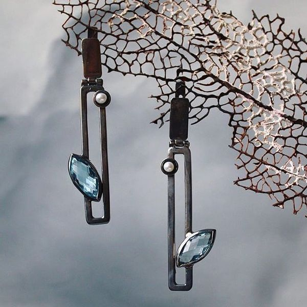 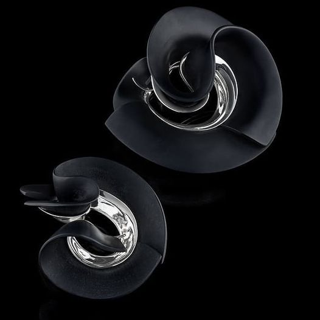
We are a dotcom gallery working in the field of Art Jewelry and Contemporary Crafts. The company was launched in 2016 and is membership based. Our objective is to communicate the current activity and insights of Contemporary Jewelry worldwide. We select, organize, edit, generate and publish information that keeps recorded in our database and accessible for members & non-members from any device with an internet connection. We give value to creation in this field. We have shaped and communicated the scenario to this value and now we are building a market for it. Our target is international art lovers. Our selection criteria, reporting about the current creation of a network of the professionals is our reference criteria. Consolidate the platform Inache Gallery in order to promote for the international community what happens in Contemporary Jewelry & Crafts, providing the resources to create a market for companies to find designers, collectors to purchase works, museums to enlarge the collections, students, teachers, experts, and artists to access relevant information.
By becoming familiar with Inache Gallery you will gain knowledge and further ability to assess and recognize creativity. Inache Gallery specifically presents the creations that exist within the world of art jewelry and contemporary crafts . This is our main service and at the same time our reason for being involved in the development of this area. Our project is like a circle that converts knowledge into emotion. Promoting the acquisition of this kind of work is our way of following that circle. This generates a feedback state where the artist and his or her creation, knowledge and emotions have the possibility of being expressed and used. Therefore creativity and art are profitable, in both a spiritual and economical manner. Trough this careful and considerate selection, Inache Gallery attempts to explain this interdisciplinary synthesis.
Our initial intention with Inache Gallery was to create a space where we could show the work of contemporary artists, what it generates and anything associated with this subject. Having the knowledge to inform and be informed to know. We wanted to set up a place where information could be attained, seen, contributed, consulted or swapped, so this became the starting point for this project. By working with global art jewelry and contemporary crafts experts, Inache Gallery is able to offer a selection based on specific artistic principles: clear conceptual criteria, high standard technic skills, and wearability. We understand that jewelry & crafts are artistic disciplines, where the works of art contain concepts and messages, and that the value of the materials used is considered secondary. Jewelry and Crafts are artistic disciplines equal to any other yet at the same time reflect other art forms. Inache Gallery treats them as art and representation, giving special emphasis to the idea that creativity is truly and undoubtedly transversal.
An international network of specialized co-operators, who will form a working team around Inache Gallery, is being created. By way of our forum, where information is dispersed and collected, we have set up a communication reference area to debate jewelry and crafts and establish knowledge networks. In order to achieve easy accessibility, we have chosen an online format. Through this platform, it is easy to send and share information, giving you not only a fast, current and up to date communication tool, but also the possibility to handle, store, dispose of or offer to others a range of information of the best quality.
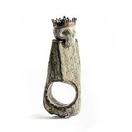 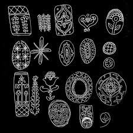 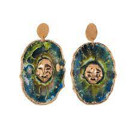 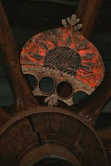 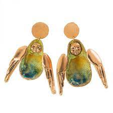
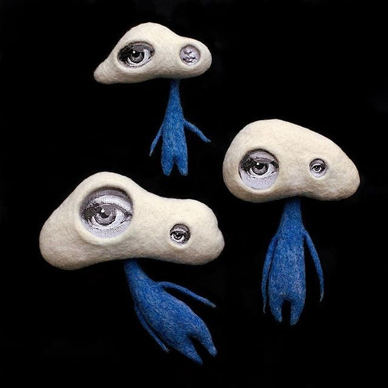 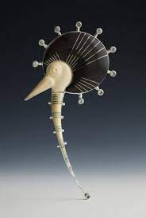 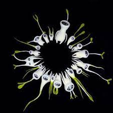 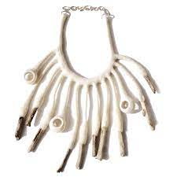 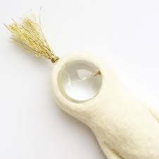
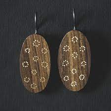 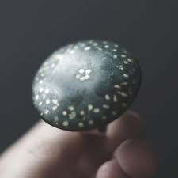 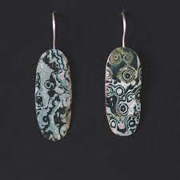 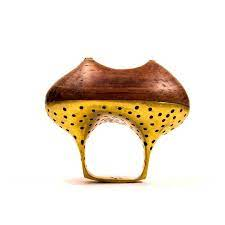 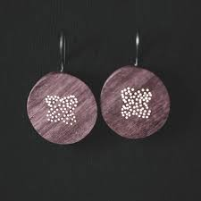
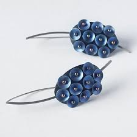 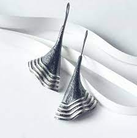 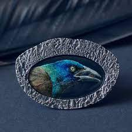 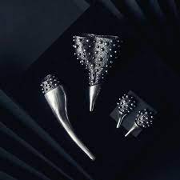 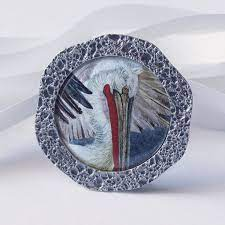
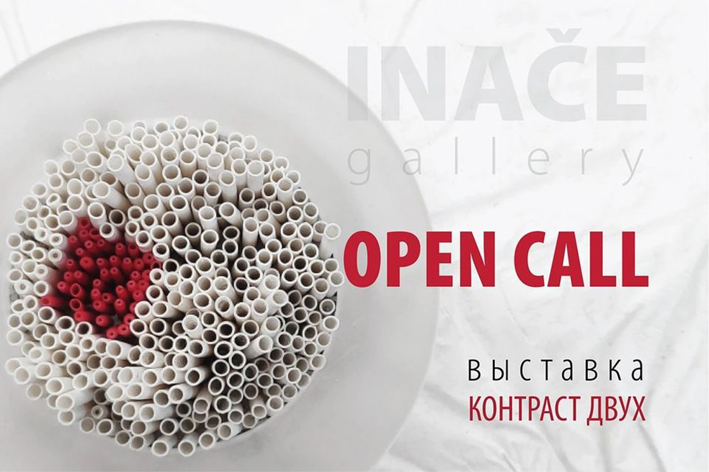
Friends, today the project has a birthday. Otherwise, we are three years old. We accept congratulations. In connection with this joyful event, we have amazing news for you. We thought for a long time and finally decided - there will be a second exhibition! We took into account previous experience and therefore this time everything will be somewhat more complicated, but we hope to get a much cooler result. The theme of the exhibition is “The Contrast of Two”, it will be devoted to the harmony and aesthetics of the different and even the opposite. This time applications will be accepted on a competitive basis! Participation is paid.